Redis学习记录
什么是Redis
Redis是用C语言开发的一个开源的高性能键值对（key-value）数据库。它通过提供多种键值数据类型来适应不同场景下的存储需求，目前为止Redis支持的键值数据类型如
下：
- 字符串类型(String)
- 散列类型(Hash)
- 列表类型(List)
- 集合类型(Set)
- 有序集合类型(Sorted Set)
Redis具备LRU淘汰、事务实现、以及不同级别的硬盘持久化等能力，并且支持副本集和通过Redis Sentinel实现的高可用方案，同时还支持通过Redis Cluster实现的数据自动分片能力。
Redis的主要功能都基于单线程模型实现，也就是说Redis使用一个线程来服务所有的客户端请求，同时Redis采用了非阻塞式IO，并精细地优化各种命令的算法时间复杂度，这些信息意味着：
- Redis是线程安全的（因为只有一个线程），其所有操作都是原子的，不会因并发产生数据异常Redis的速度非常快（因为使用非阻塞式IO，且大部分命令的算法时间复杂度都是O(1))
- 使用高耗时的Redis命令是很危险的，会占用唯一的一个线程的大量处理时间，导致所有的请求都被拖慢。（例如时间复杂度为O(N)的KEYS命令，严格禁止在生产环境中使用）
Redis特性
特性1：速度快
10w QPS
原因
- 数据存在内存
- c语言编写
- 单线程编写


特性2：持久化
redis所有的数据保存在内存中，对数据的更新将异步地保存到磁盘上
特性3：数据结构
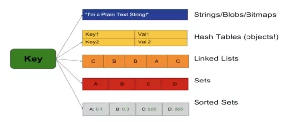
特性4：多语言客户端
- java
- php
- python
- ruby
- lua
- nodejs
特性5：功能丰富
- 发布订阅
- lua脚本
- 事务
- pipeline
特性6：简单
- 23000行代码实现核心功能
- 不依赖外部库
- 单线程模型
特性7：复制
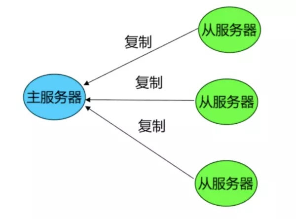
特性8：高可用
- redis-sentinel支持高可用
- 分布式 redis-cluster支持分布式
典型使用场景
缓存系统

缓存一些热点数据，例如，PC版本文件更新内容、资讯标签和分类信息、生日祝福寿星列表。
计数器
数据统计的需求非常普遍，通过原子递增保持计数。例如，点赞数、收藏数、分享数等。
排行榜
排行榜按照得分进行排序，例如，展示最近、最热、点击率最高、活跃度最高等等条件的top list。
用于存储时间戳
类似排行榜，使用redis的zset用于存储时间戳，时间会不断变化。例如，按照用户关注用户的最新动态列表。
记录用户判定信息
记录用户判定信息的需求也非常普遍，可以知道一个用户是否进行了某个操作。例如，用户是否点赞、用户是否收藏、用户是否分享等。
社交列表
社交属性相关的列表信息，例如，用户点赞列表、用户收藏列表、用户关注列表等。
队列
Redis能作为一个很好的消息队列来使用，通过list的lpop及lpush接口进行队列的写入和消费，本身性能较好能解决大部分问题。但是，不提倡使用，更加建议使用rabbitmq等服务，作为消息中间件。
会话缓存
使用Redis进行会话缓存。例如，将web session存放在Redis中。
Redis安装与启动
Redis安装(mac&linux)
$ wget http://download.redis.io/releases/redis-4.0.8.tar.gz
$ tar xzf redis-4.0.8.tar.gz
$ cd redis-4.0.8
$ make
Redis可执行文件说明
| 命令名 | 命令说明 |
|---|---|
| redis-server | redis服务器 |
| redis-cli | redis命令行客户端 |
| redis-benchmark | redis性能测试工具 |
| redis-check-aof | aof文件修复工具 |
| redis-check-dump | RDB文件检查工具 |
| redis-sentinel | sentinel服务器(2.8以后) |
Redis三种启动方式
最简启动(采用默认配置文件启动）
redis-server
验证
ps aux | grep redis
redis-cli -h 127.0.0.1 -p 6379 ping
配置文件启动 (将需要配置的参数写入文件）
redis-server configPath
动态参数启动
redis-server --port 6380
三种启动方式比较
- 生产环境选择配置启动
- 单机多实例配置文件可以用端口区分开
Redis客户端连接
redis-cli -h 127.0.0.1 -p 6379
Redis常用配置
| 配置名 | 说明 |
|---|---|
| daemonize yes | 是否以后台进程<守护进程>运行 |
| port 6379 | redis对外端口号,默认访问地址 6379 |
| logfile | redis系统日志 |
| dir ./. | redis工作目录,存储数据的文件所在路径 |
| dbfilename dump.rdb | 存储数据的文件 |
| bind 127.0.0.1 | 绑定ip地址，远程访问请注释 |
Redis安装启动(配置文件方式)
配置方式
配置文件
vim redis-6382.conf
port 6382
daemonize yes
logfile "6382.log"
dir ./workdata/
启动
redis-server redis-6382.conf
检查
ps -aux | grep -v redis-server | grep 6382
日志文件
vim workdata/6382.log
启动和关闭Redis服务
#启动redis服务
./redis-server redis.conf
#查看redis服务进程 是否启动成功
ps -ef | grep redis
ps -A | grep redis
#redis客户端启动
redis-cli
#关闭redis服务
ps -A | grep redis
API理解与使用
通用命令
| 命令 | 说明 | 时间复杂度 |
|---|---|---|
| keys [pattern] | 遍历所有key | O(N) |
| dbsize | 遍历所有key | O(1) |
| exists | 检查key是否存在 | O(1) |
| del [key] | 删除指定的key-value | O(1) |
| expire [key] seconds | key在seconds秒后过期 | O(1) |
| ttl [key] | 查看key剩余的过期时间 | O(1) |
| persist [key] | 去掉key的过期时间 | O(1) |
| type [key] | 返回key的类型 | O(1) |
注意 keys命令一般不再生产环境使用
redis-4.0.8 redis-cli -h 127.0.0.1 -p 6382
127.0.0.1:6382> set hello word
OK
127.0.0.1:6382> set php good
OK
127.0.0.1:6382> set java best
OK
127.0.0.1:6382> keys *
1) "java"
2) "hello"
3) "php"
127.0.0.1:6382> dbsize
(integer) 3
127.0.0.1:6382> exists php
(integer) 1
127.0.0.1:6382> del php java
(integer) 2
127.0.0.1:6382> keys *
1) "hello"
127.0.0.1:6382> expire hello 20
(integer) 1
127.0.0.1:6382> ttl hello
(integer) 16
127.0.0.1:6382> ttl hello
(integer) 12
127.0.0.1:6382> persist hello
(integer) 1
127.0.0.1:6382> ttl hello
(integer) -1
127.0.0.1:6382> type hello
string
单线程
定义
单线程在程序执行时，所走的程序路径按照连续顺序排下来，前面的必须处理好，后面的才会执行。
单线程为什么这么快
- 纯内存
- 非阻塞IO
- 避免线程切换和竞态消耗
使用单线程要注意什么
- 一次只能运行一条命令
- 拒绝长（慢）命令
- keys
- flushall
- flushdb
- slow lua script
- mutil/exec
- operate big value(collection)
String
结构
可以是字符串（json);数字，以及二进制
使用场景
- 缓存
- 计数器
- 分布式锁
API
| 命令 | 说明 | 时间复杂度 |
|---|---|---|
| get [key] | 获取key对应的value | O(1) |
| set [key] [value] | 设置key value | O(1) |
| del [key] | 删除key-value | O(1) |
| incr | key自增1， 如果key不存在，自增后get(key) = 1 | O(1) |
| decr | key自减1， 如果key不存在，自增后get(key) = -1 | O(1) |
| incrby [key] k | key自增k， 如果key不存在，自增后get(key) = k | O(1) |
| decr [key] k | key自减k， 如果key不存在，自增后get(key) = -k | O(1) |
| set [key] [value] | 不管可以是否存在 | O(1) |
| setnx [key] [value] | key不存在，才设置 | O(1) |
| set [key] [value] xx | key存在，才设置 | O(1) |
| mget [key1] [key2] [key3] | 批量获取key，原子操作 | O(N) |
| mset [key1] [value1] [key2] [value2] | 批量设置key-value | O(1) |
| getset [key] [newvalue] | set key newvalue并返回旧的value | O(1) |
| append [key] [value] | 将value追加到旧的value | O(1) |
| strlen [key] | 返回字符串的长度（注意中文，utf8下一个中文占用3个字符） | O(1) |
| incrbyfloat [key] 3.5 | 增加key对应的值3.5 | O(1) |
| getrange [key] [start] [end] | 获取字符串指定下标所有的值 | O(1) |
| setrange [key] [index] [value] | 设置指定下标所有对应的值 | O(1) |
练习
127.0.0.1:6382> set hello "world"
OK
127.0.0.1:6382> get hell
(nil)
127.0.0.1:6382> get hello
"world"
127.0.0.1:6382> del hello
(integer) 1
127.0.0.1:6382> get hello
(nil)
127.0.0.1:6382> get counter
(nil)
127.0.0.1:6382> incr counter
(integer) 1
127.0.0.1:6382> get counter
"1"
127.0.0.1:6382> incrby counter 99
(integer) 100
127.0.0.1:6382> get counter
"100"
127.0.0.1:6382> decr counter
(integer) 99
127.0.0.1:6382> get counter
"99"
127.0.0.1:6382> decrby counter 100
(integer) -1
127.0.0.1:6382> get counter
"-1"
127.0.0.1:6382> exists php
(integer) 0
127.0.0.1:6382> set php good
OK
127.0.0.1:6382> setnx php bad
(integer) 0
127.0.0.1:6382> set php best xx
OK
127.0.0.1:6382> get php
"best"
127.0.0.1:6382> exists java
(integer) 0
127.0.0.1:6382> setnx java best
(integer) 1
127.0.0.1:6382> set java easy xx
OK
127.0.0.1:6382> get java
"easy"
127.0.0.1:6382> set hello world
OK
127.0.0.1:6382> getset hello php
"world"
127.0.0.1:6382> get hello
"php"
127.0.0.1:6382> append hell ",php"
(integer) 4
127.0.0.1:6382> get hello
"php"
127.0.0.1:6382> append hello ",php"
(integer) 7
127.0.0.1:6382> get hello
"php,php"
127.0.0.1:6382> strlen hello
(integer) 7
127.0.0.1:6382> set hello "吴军旗"
OK
127.0.0.1:6382> strlen hello
(integer) 9
n次get操作

1次mget操作
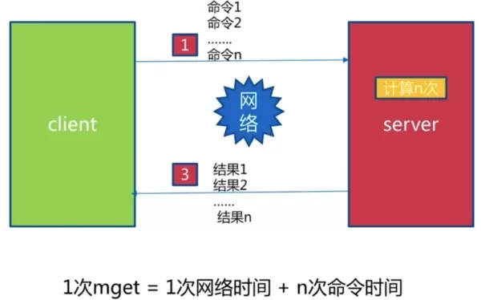
实战
- 记录网站每个用户个人主页的访问量
incr userid: pageview (**主要的是：单线程，所以无竞争）**）
- 缓存视频的基本信息（数据源在mysql中)伪代码

- 分布式id生成器（单线程的好处）

incr id
Hash
哈希键值结构
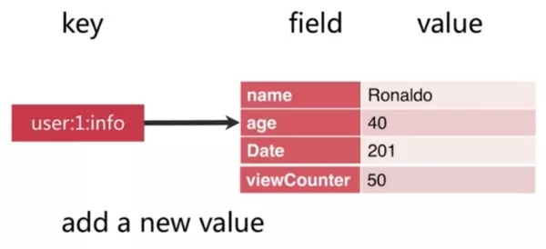
特点
- mapmap
- small redis
- field不能相同，value可以相同
API
| 命令 | 说明 | 时间复杂度 |
|---|---|---|
| hget [key] [field] | 获取hash key对应field的value | O(1) |
| hset [key] [field] [value] | 设置has key 对应的field的value | O(1) |
| hexists [key] [field] | 判断hash key 是否有field | O(1) |
| hlen [key] | 获取hash key field的数量 | O(1) |
| hmget [key] [field1] [field2...fieldN] | 批量获取hash key的一批field对应的值 | O(N) |
| hset [key] [field1] [value1] [field2] [value2...fieldN] [valueN] | 批量设置hash key的一批field value | O(1) |
| hgetall [key] | 返回hash key对应所有的field和value | O(N) |
| hvals [key] | 返回hash key对应所有的field的value | O(N) |
| hkeys [key] | 返回hash key对应所有的field | O(N) |
| hsetnx [key] [field] [value] | 设置has key 对应的field的value(如果field已经存在，则失败） | O(1) |
| hincrby [key] [field] [intCounter] | hash key对应的field的value自增intCounter | O(1) |
| hincrbyfloat [key] [field] [floatCounter] | 浮点数版本 | O(1) |
注意 小心使用hgetall（牢记单线程）
练习
127.0.0.1:6382> hset user1 age 26
(integer) 1
127.0.0.1:6382> hset user1 name wujunqi
(integer) 1
127.0.0.1:6382> hget all user1
(nil)
127.0.0.1:6382> hgetall user1
1) "age"
2) "26"
3) "name"
4) "wujunqi"
127.0.0.1:6382> hdel user1 age
(integer) 1
127.0.0.1:6382> hgetall user1
1) "name"
2) "wujunqi"
127.0.0.1:6382> hget user1 name
"wujunqi"
127.0.0.1:6382> hexists user1 name
(integer) 1
127.0.0.1:6382> hlen user1
(integer) 1
127.0.0.1:6382> hmset user2 name xiaofang age 26
OK
127.0.0.1:6382> hmget user2 name age
1) "xiaofang"
2) "26"
127.0.0.1:6382> hgetall user2
1) "name"
2) "xiaofang"
3) "age"
4) "26"
127.0.0.1:6382> hvals user2
1) "xiaofang"
2) "26"
127.0.0.1:6382> hkeys user2
1) "name"
2) "age"
127.0.0.1:6382> hincrby user age 2
(integer) 2
127.0.0.1:6382> hgetall user2
1) "name"
2) "xiaofang"
3) "age"
4) "26"
127.0.0.1:6382> hincrby user2 age 2
(integer) 28
127.0.0.1:6382> hgetall user2
1) "name"
2) "xiaofang"
3) "age"
4) "28"
127.0.0.1:6382> hincrbyfloat user2 age 2.0
"30"
127.0.0.1:6382> hincrbyfloat user2 age 2.5
"32.5"
127.0.0.1:6382> hgetall user2
1) "name"
2) "xiaofang"
3) "age"
4) "32.5"
List
列表结构
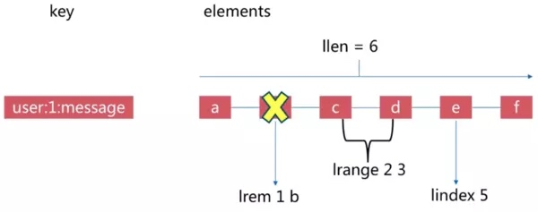
特点
- 有序
- 可以重复
- 左右两边插入弹出
API
| 命令 | 说明 | 时间复杂度 |
|---|---|---|
| rpush [key] [value1 value2...valueN] | 从列表右边插入（1-N）个 | O(1-N) |
| lpush [key] [value1 value2...valueN] | 从列表左边插入（1-N）个 | O(1-N) |
| linsert [key] before/after [value] [newValue] | 在list指定的值前、后插入newValue | O(N) |
| lpop key | 从列表左侧弹出一个item | O(1) |
| rpop key | 从列表右侧弹出一个item | O(1) |
| lrem key count value | (1)count>0,从左到右，删除最多count个value相等的项;(2)count<0,从右到左，删除最多count个value相等的项;(3)count=0,从右到左，删除所有value相等的项; | O(N) |
| ltrim key start end | 按照索引范围修剪列表 | O(N) |
| lindex key start end(包含end) | 获取列表指定索引范围所有item | O(N) |
| lindex key index | 获取列表指定索引的item | O(1) |
| llen key | 获取列表长度 | O(1) |
| lset key index newValue | 设置列表指定索引值为newValue | O(N) |
| blpop key timeout | lpop阻塞版本，timeout是阻塞超时时间，timeout=0为永远阻塞 | O(1) |
| broop key timeout | rpop阻塞版本，timeout是阻塞超时时间，timeout=0为永远阻塞 | O(1) |
练习
127.0.0.1:6382> rpush list1 a b c d
(integer) 4
127.0.0.1:6382> lpush list1 e f g h i
(integer) 9
127.0.0.1:6382> lrange list1 0 -1
1) "i"
2) "h"
3) "g"
4) "f"
5) "e"
6) "a"
7) "b"
8) "c"
9) "d"
127.0.0.1:6382> linsert list1 before i wu
(integer) 10
127.0.0.1:6382> lrange list1 0 -1
1) "wu"
2) "i"
3) "h"
4) "g"
5) "f"
6) "e"
7) "a"
8) "b"
9) "c"
10) "d"
127.0.0.1:6382> linsert list1 after i jun
(integer) 11
127.0.0.1:6382> lrange list1 0 -1
1) "wu"
2) "i"
3) "jun"
4) "h"
5) "g"
6) "f"
7) "e"
8) "a"
9) "b"
10) "c"
11) "d"
127.0.0.1:6382> lpop list1
"wu"
127.0.0.1:6382> rpop list1
"d"
127.0.0.1:6382> lrange list1 0 -1
1) "i"
2) "jun"
3) "h"
4) "g"
5) "f"
6) "e"
7) "a"
8) "b"
9) "c"
127.0.0.1:6382> lrem list1 1 i
(integer) 1
127.0.0.1:6382> lrange list1 0 -1
1) "jun"
2) "h"
3) "g"
4) "f"
5) "e"
6) "a"
7) "b"
8) "c"
127.0.0.1:6382> rpush list1 c c c c c
(integer) 13
127.0.0.1:6382> ltrem list1 -3 c
(error) ERR unknown command 'ltrem'
127.0.0.1:6382> lrem list1 -3 c
(integer) 3
127.0.0.1:6382> lrange list1 0 -1
1) "jun"
2) "h"
3) "g"
4) "f"
5) "e"
6) "a"
7) "b"
8) "c"
9) "c"
10) "c"
127.0.0.1:6382> lindex list 0
(nil)
127.0.0.1:6382> lindex list1 0
"jun"
127.0.0.1:6382> llen list1
(integer) 10
127.0.0.1:6382> lset list 0 wu
(error) ERR no such key
127.0.0.1:6382> lset list1 0 wu
OK
127.0.0.1:6382> lrange list1 0 -1
1) "wu"
2) "h"
3) "g"
4) "f"
5) "e"
6) "a"
7) "b"
8) "c"
9) "c"
10) "c"
应用


Set
定义
Redis 的 Set 是 String 类型的无序集合。集合成员是唯一的，这就意味着集合中不能出现重复的数据。 Redis 中集合是通过哈希表实现的，所以添加，删除，查找的复杂度都是 O(1)。
特点
- 无序
- 无重复
- 集合间操作
API
- 集合内的操作
| 命令 | 说明 | 时间复杂度 |
|---|---|---|
| sadd key element | 向集合key添加element(如果element已经存在，添加失败） | O(1) |
| srem key element | 将集合key中的element移除掉 | O(1) |
| scard key | 计算集合大小 | O(1) |
| sismember key element | 判断element 是否在集合中 | O(1) |
| srandmember key count | 从集合中随机挑count个元素 | O(1) |
| spop key | 从集合中随机弹出一个元素 | O(1) |
| smembers key | 获取集合所有元素 | O(1) |
| srem key element | 将集合key中的element移除掉 | O(1) |
- 集合间的操作
| 命令 | 说明 | 时间复杂度 |
|---|---|---|
| sdiff key1 key2 | 差集 | O(1) |
| sinter key1 key2 | 交集 | O(1) |
| sunion key1 key2 | 并集 | O(1) |
| sidff/sinter/suion + store destkey | 将差集、交集、并集保存在destkey中 | O(1) |
注意
- srandmember不会破坏集合
- spop会破会
- smembers 返回的是无序集合，并且要注意量很大的时候回阻塞
练习
127.0.0.1:6382> sadd set1 a b c d
(integer) 4
127.0.0.1:6382> srem set1 a
(integer) 1
127.0.0.1:6382> smembers set1
1) "d"
2) "c"
3) "b"
127.0.0.1:6382> scard set1
(integer) 3
127.0.0.1:6382> sismember set1 d
(integer) 1
127.0.0.1:6382> srandmember set1 2
1) "d"
2) "b"
127.0.0.1:6382> srandmember set1 2
1) "b"
2) "c"
127.0.0.1:6382> spop set1
"c"
127.0.0.1:6382> smembers set1
1) "d"
2) "b"
127.0.0.1:6382> srem set1 d
(integer) 1
127.0.0.1:6382> smembers set1
1) "b"
127.0.0.1:6382> sadd set1 1 2 3 4 5
(integer) 5
127.0.0.1:6382> sadd set2 a b c 12 8 9 1 2
(integer) 8
127.0.0.1:6382> sdiff set1 set2
1) "3"
2) "4"
3) "5"
127.0.0.1:6382> sinter set1 set2
1) "2"
2) "b"
3) "1"
127.0.0.1:6382> sunion set1 set2
1) "5"
2) "2"
3) "4"
4) "1"
5) "a"
6) "8"
7) "3"
8) "b"
9) "9"
10) "12"
11) "c"
127.0.0.1:6382>
实战
- 抽奖系统， 用spop

- 赞过的文章，收藏过的文章等

- 标签
- 共同关注
Zset
定义
Redis 有序集合和集合一样也是string类型元素的集合,且不允许重复的成员。不同的是每个元素都会关联一个double类型的分数。redis正是通过分数来为集合中的成员进行从小到大的排序。有序集合的成员是唯一的,但分数(score)却可以重复。
API
| 命令 | 说明 | 时间复杂度 |
|---|---|---|
| zadd key score element | 添加score和element | O(logN) |
| zrem key element(可以是多个) | 将集合key中的element移除掉 | O(1) |
| zscore key element | 返回元素的分数 | O(1) |
| zincrby key increScore element | 增加或减少元素的分数 | O(1) |
| zcard key | 返回元素的总个数 | O(1) |
| zrank(zrevrank) key member | 返回元素的排名 | O(1) |
| zrange(zrevrank) key start end [WITHSCORES] | 返回指定索引范围内的升序元素[分值] | O(logN + m) |
| zrangebyscore(zrevrangebyscore) key minScore maxScore | 返回指定分数范围内的升序元素 | O(logN + m) |
| zcount key minScore maxScore | 返回有序集合内在指定分数范围内的个数 | O(logN + m) |
| zremrangebyrank key start end | 删除指定排名内的升序元素 | O(logN + m) |
| zremrangebyscore key minScore maxScore | 删除指定分数内的升序元素 | O(logN + m) |
| ZINTERSTORE destination numkeys(表示key的个数) key [key ...] | 计算给定的一个或多个有序集的交集并将结果集存储在新的有序集合 key 中 | |
| ZUNIONSTORE destination numkeys key [key ...] | 计算给定的一个或多个有序集的并集，并存储在新的 key 中 |
实战
- 各种榜单（score:timestamp, saleCount, followCount)

Redis客户端的使用
推荐一款Mac的Redis客户端-Medis
Medis是基于electron开发的免费开源的Redis桌面客户端，在Mac上相比于Redis Desktop Manager软件安装简单，运行稳定，很少出现崩溃重启的现象，最重要的是免费。
相关信息：
代码地址：https://github.com/luin/medis
安装步骤：
$ git clone https://github.com/luin/medis
$ cd medis
$ npm install
$ npm run build
$ npm start
具体请参考官方说明文档。
Redis的其他功能
慢查询
生命周期

两点说明
慢查询发生在第3阶段
客户端超时不一定慢查询，但慢查询是客户端超时的一个可能因素
两个配置
- slowlog-max-len

- slowlog-log-slower-than
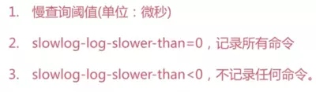
如何配置

慢查询命令
- slowlog get [n] : 获取慢查询队列
- slowlog len: 获取慢查询队列长度
- slowlog reset: 清空慢查询队列
运维经验

pipeline:流水线
流水线
- 1次网络命令通信模型

- 批量网络命令通信模型
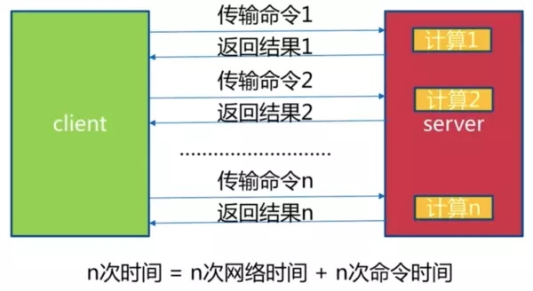
什么是流水线

流水线的作用

两点注意
- redis的命令时间是微秒级别
- pipeline每次条数要控制（网络）
与原生操作对比
- M操作

- pipeline

使用建议
- 注意每次pipeline携带数据量
- pipeline每次只能作用在一个redis节点上
- M操作与pipeline区别
发布订阅
角色
- 发布者
- 订阅者
频道
发布者不是计划发送消息给特定的接收者（订阅者），而是发布的消息分到不同的频道，不需要知道什么样的订阅者订阅
订阅者对一个或多个频道感兴趣，只需接收感兴趣的消息，不需要知道什么样的发布者发布的
发布者和订阅者的解耦合可以带来更大的扩展性和更加动态的网络拓扑
客户端发到频道的消息，将会被推送到所有订阅此频道的客户端
客户端不需要主动去获取消息，只需要订阅频道，这个频道的内容就会被推送过来
模型
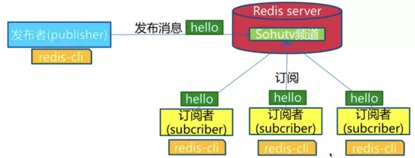

消息的格式
推送消息的格式包含三部分
- part1:消息类型，包含三种类型
- subscribe，表示订阅成功
- unsubscribe，表示取消订阅成功
- message，表示其它终端发布消息
- 如果第一部分的值为subscribe，则第二部分是频道，第三部分是现在订阅的频道的数量
- 如果第一部分的值为unsubscribe，则第二部分是频道，第三部分是现在订阅的频道的数量，如果为0则表示当前没有订阅任何频道，当在Pub/Sub以外状态，客户端可以发出任何redis命令
- 如果第一部分的值为message，则第二部分是来源频道的名称，第三部分是消息的内容
subscribe 频道名称 [频道名称]：订阅多个频道
unsubscribe 频道名称 [频道名称]：取消多个频道的订阅
publish 频道 消息：向指定的频道推送消息
API
- publish channel message
- subscribe [channel] 一个或者多个
- unsubscribe [channel] 一个或者多个
练习
127.0.0.1:6382> publish weibomovie "hello world"
(integer) 1
127.0.0.1:6382> publish weibomovie "hello world2"
(integer) 1
复制代码另外一个cli
127.0.0.1:6382> SUBSCRIBE weibomovie
Reading messages... (press Ctrl-C to quit)
1) "subscribe"
2) "weibomovie"
3) (integer) 1
1) "message"
2) "weibomovie"
3) "hello world"
1) "message"
2) "weibomovie"
3) "hello world2"
发布订阅与消息队列

Bitmap
位图

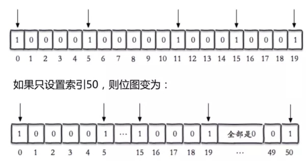
API
| 命令 | 说明 | 时间复杂度 |
|---|---|---|
| setbit key offset value | 给位图指定索引设置值 | O(1) |
| getbit key offset | 获取位图指定索引的值 | O(1) |
| bitcount key start end | 获取位图指定范围（start 到end，单位为字节，如果不指定就获取全部）位值为1的个数 | O(1) |
| bitop op destkey key [key...] | 做多个bitmap的and，or，not，xor操作并将结果保存在destkey中 | O(1) |
| bitpos key targetBit [start][end | 计算位图指定范围（start到end，单位为字节，如果不指定就是获取全部）第一个偏移量对应的值等于targetBit的位置 | O(1) |
练习
127.0.0.1:6382> set hello big
OK
127.0.0.1:6382> getbit hello
(error) ERR wrong number of arguments for 'getbit' command
127.0.0.1:6382> getbit hello 0
(integer) 0
127.0.0.1:6382> setbit hello 0 1
(integer) 0
127.0.0.1:6382> get hello
"\xe2ig"
127.0.0.1:6382> set hell a
OK
127.0.0.1:6382> bitcount hell
(integer) 3
127.0.0.1:6382> bitop and hell hello
(integer) 3
127.0.0.1:6382> set a a
OK
127.0.0.1:6382> set b b
OK
127.0.0.1:6382> bitop and c a b
(integer) 1
127.0.0.1:6382> get c
"`"
127.0.0.1:6382> bitpos a 1
(integer) 1
127.0.0.1:6382> bitpos a 0
(integer) 0
127.0.0.1:6382> set user2 100
OK
代码独立用户统计
重要理解使用位图去记录用户uid，其实就是记录索引值，比如userid=100代表位图下标100的值为1


使用经验
- type=string,最大512MB
- 注意setbit时的偏移量，可能有较大耗时
- 位图不是绝对好
HyperLogLog
新的数据结构

API
| 命令 | 说明 |
|---|---|
| pfaddd key element [element...] | 向hyperloglog添加元素 |
| pfcount key [key...] | 计算hyperloglog的独立总数 |
| pfmerge destkey sourceKey [sourcekey...] | 合并多个hyperloglog |
练习
127.0.0.1:6382> pfadd puser1 "u1" "u2" "u3"
(integer) 1
127.0.0.1:6382> pfcount puser1
(integer) 3
127.0.0.1:6382> pfadd puser2 "u3" "u4" "u5"
(integer) 1
127.0.0.1:6382> pfmerge puser puser1 puser2
OK
127.0.0.1:6382> pfcount puser
(integer) 5
内存消耗
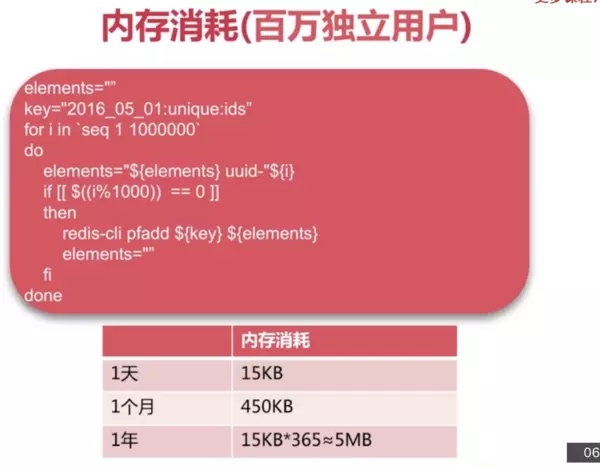
使用经验
- 是否能容忍错误（错误率：0.81%）
- 是否需要单条数据（没有办法取出）
GEO
GEO是什么

5个城市经纬度

API
| 命令 | 说明 |
|---|---|
| geoadd key longitude latitude member [longitude latitude member ...] | 增加地理位置信息 |
| geopos key member[member...] | 获取地理位置信息 |
| geodist key member1 member2[unit] | 获取两个地理位置的距离，unit:m,km,mi,ft |
| georadius | 获取指定位置范围内的地理位置信息集合 |
练习
127.0.0.1:6382> geoadd beijing 116.28 39.55
(error) ERR wrong number of arguments for 'geoadd' command
127.0.0.1:6382> geoadd geo 116.28 39.55 beijing 117.12 39.08 tianjin
(integer) 2
127.0.0.1:6382> geopos geo beijing
1) 1) "116.28000229597091675"
2) "39.5500007245470826"
127.0.0.1:6382> geodist geo beijing tianjin
"89206.0576"
127.0.0.1:6382>
相关说明
- since 3.2+
- type geoKey = zset
- 没有删除API：zrem key member
Redis持久化的取舍和选择
持久化的作用
什么是持久化
redis所有数据保存在内存中， 对数据的更新将异步地保存到磁盘上

持久化的实现方式
- 快照
- mysql dump
- redis RDB
- 写日志
- mysql binlog
- hbase hLog
- redis AOF
RDB
什么是RDB

触发机制-主要三种方式
save（同步）

* 文件策略：如存在老的RDB文件，新替换老
* 复杂度：O(N)
bgsave(异步）

自动配置

相关配置
| 配置参数 | 值 |
|---|---|
| save | 900 1 |
| save | 300 10 |
| save | 60 10000 |
| dbfilename | dump-${port}.rdb |
| dir | /bigdishpath |
| stop-writes-on-bgsav-error | yes |
| rdbcompression | yes |
save与bgsave

触发机制-不容忽略的方式
其他的方式也会触发生成RDB文件
- 全量复制
- debug reload
- shutdown
总结
- RDB是Redis内存到硬盘的快照，用于持久化
- save通常会阻塞Redis
- bgsave不会阻塞redis，但是会fork新进程
- save自动配置满足任一就会被执行
- 有些触发机制不容忽视
AOF
RDB现存问题
- 耗时，好性能

- 不可控，丢失数据 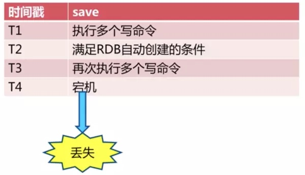 #### 什么是AOF
- 创建

- 恢复 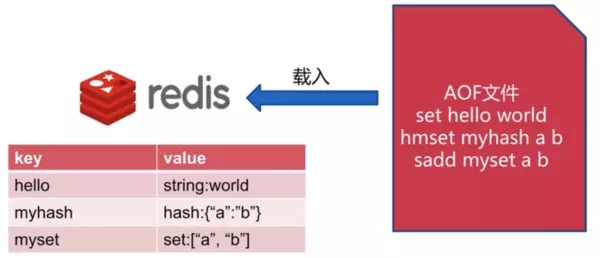
AOF三种策略
- always

- everysec 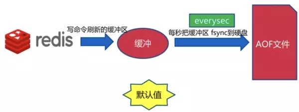
- no

三种策略比较

AOF重写

AOF重写的作用
- 减少硬盘占用量
- 加速恢复速度
#### AOF重写实现的两种方式 - bgrewriteaof

- aof重写配置


AOF重写流程

配置

RDB与AOF的选择

RDB最佳策略
- 关
- 集中管理
- 主从，从开
#### AOF最佳策略 - 开，缓存和存储
- AOF重写集中管理
- everysec
发布Android库至JCenter仓库
注册bintray账号
此账号就是我们用来管理maven或者jcenter的控制台，注册地址为：https://bintray.com/signup/oss
注册地址一定要为这个，如果从官网进行注册，所找到的不是个人申请入口，而是组织申请入口。
Copyright © 2015 Powered by MWeb, Theme used GitHub CSS.